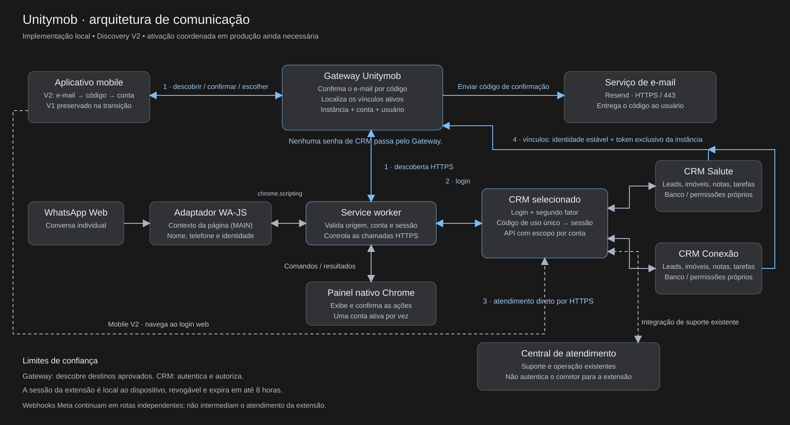

<!doctype html><html lang="pt-BR"><meta charset="utf-8"><meta name="viewport" content="width=device-width,initial-scale=1"><title>Arquitetura Unitymob</title><style>body{margin:0;background:#191919;color:#eee;font-family:system-ui}header{padding:14px 24px;display:flex;gap:20px;align-items:center}a{color:#a8d1f7}img{width:100%;min-width:1000px}main{overflow:auto}button{background:#303235;color:#fff;border:1px solid #6a7380;border-radius:6px;padding:8px;cursor:pointer}</style><header><strong>Comunicação entre os serviços</strong><a href="unitymob-discovery.svg" download>Baixar SVG</a><button onclick="document.querySelector('img').style.width=document.querySelector('img').style.width==='1820px'?'100%':'1820px'">Ampliar / ajustar</button></header><main></main></html>